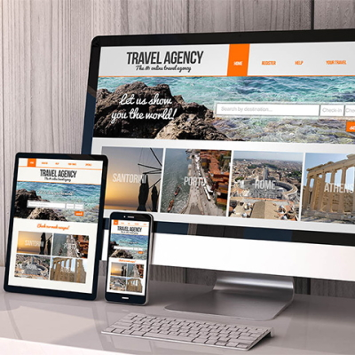

Motive simple pentru care afacerea ta are nevoie de un site
Prezenta afacerii tale in mediul virtual este o parte indispensabila in drumul tau catre succes. In prezent, tehnologiile au avansat atat de mult incat orice aspect al unei afaceri poate fi realizat pe Internet. Datorita conceptului de e-Commerce, este posibila tranzactionarea cu usurinta cu partenerii comerciali prin intermediul Internetului. In masura in care ai inceput o afacere, trebuie sa ai in vedere faptul ca ai nevoie macar de un simplu site de prezentare al acesteia sau, de ce nu, de site-uri mai complexe sub forma de magazine virtuale pentru a-ti creste profiturile si cifra de afaceri.
Prezenta globala pe piata
O afacere este capabila sa se dezvolta in masura in care exista un numar semnificativ de persoane care sunt interesate sa achizitioneze produsele si serviciile pe care aceasta le ofera. Daca ai un sediu intr-o anumita locatie, atunci este clar ca oferta ta de servicii se adreseaza clientilor din zona respectiva. Totusi, un site iti asigura o vizibilitate nationala sau internationala, deci oferta ta de produse si servicii se adreseaza unui numar mult mai mare de persoane care pot deveni clientii tai. Aceasta se traduce invariabil in cresterea oportunitatilor de vanzare si implicit, cresterea profiturilor realizate.
Campanii de publicitate
Site-ul companiei este cea mai buna forma de publicitate. Poti ajunge la clientii potentiali in cel mai scurt timp posibil si ii poti informa rapid despre ultimele oferte speciale si reducerile de care pot beneficia. Poti consolida pozitia brandului companiei in piata sau iti poti creste vanzarile pentru anumite produse si servicii. Citeste mai mult despre modalitatile de publicitate online ce pot fi implementate daca website-ul promovat este bine realizat.
Prezentarea informatiei
Sa ne gandim la urmatorul scenariu: ai in portofoliu un nou produs sau serviciu si ai dori ca sa il promovezi in randul clientilor. Crezi ca daca le trimiti un pliant cu detaliile despre acesta, te ajuta foarte mult? Desigur ca nu. Pentru ca potentialii clienti il vor considera doar o alta reclama de care nu au nevoie. Promovarea unui nou produs sau serviciu nu este un task usor de realizat, insa aceasta munca se poate indeplini mai usor in masura in care publici pe site-ul tau detaliile noului produs cu toate detaliile aferente.
Accesibilitatea afacerii in tot timpul anului
Accesibilitatea afacerii este o parte integranta intr-o reteta de succes. Gandeste-te ca un magazin normal de desfacere al produselor are un program de lucru care respecta un anumit orar. Gandeste-te insa, ca in acel orar, clientii potentiali poate nu sunt disponibili. De aceea, un site face o buna prezentare a afacerii in orice ora din zi si din noapte, indiferent de anotimp.
Comunicarea cu Clientii & Furnizorii companiei
Datorita existentei unor softuri specializate in email Marketing, Content Marketing, Video Marketing, se pot realiza scenarii complexe de comunicare prin care antrepenorii pot primi informatii cu noile tendinte in piata. Procesul de fidelizare si remarketare a clientilor este mult mai usor de implementat avand un website bine structurat.
Evident, pe langa acestea, sunt inca multe alte motive pentru care trebuie sa iti prezinti afacerea pe internet. Daca nu ai inceput procesul acesta pana acum, cred ca este timpul ca sa faci acest lucru, avand in vedere ca in mod sigur afacerea ta va avea de castigat. Citeste aici cum poti realiza usor un site de prezentare.